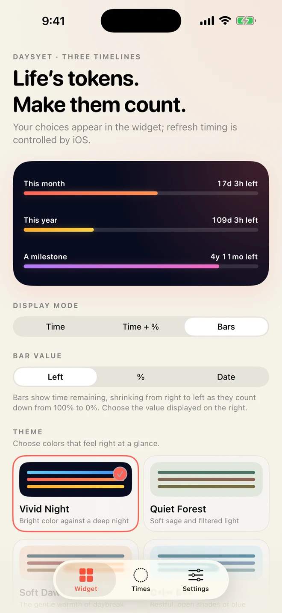
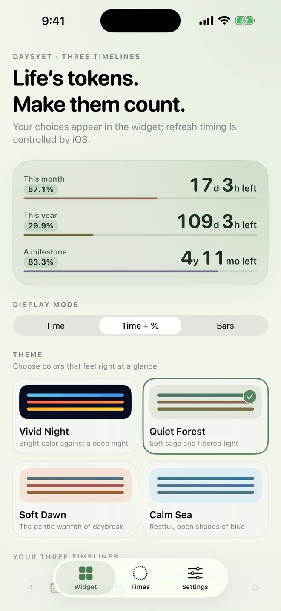
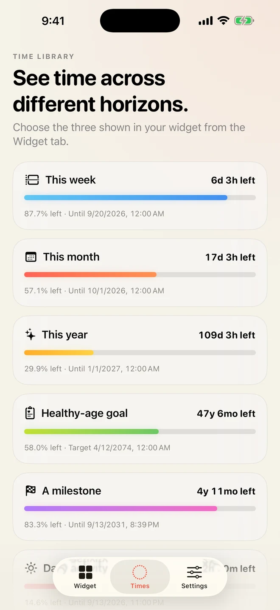
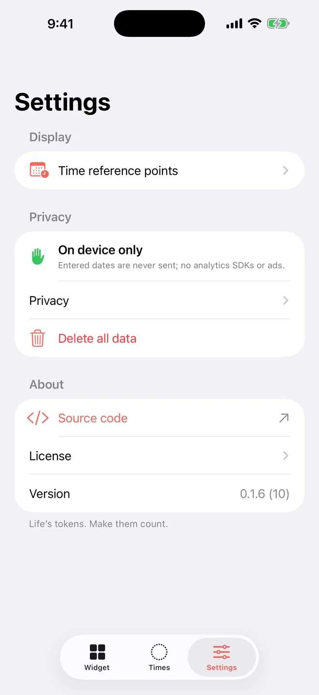

Choose three timelines
Pick from this week, month, year, and a healthy-age goal. Add an optional milestone with its own start and target dates whenever you need one.
Week, month, year, and personal goals. Keep three on your Home Screen with time left and elapsed progress at a glance. Put one selected timeline on your Lock Screen.

Pick your three timelines, display mode, and theme, and the preview reflects exactly what your Home Screen widget will show. In Bars mode, you can also choose the value shown at the right.

Keep large time-left values beside elapsed percentages and bars that build from left to right. Switch to time-only or bars-only whenever you prefer.

Review everything from this week to a personal milestone. Choose the three for your widget from this library.
Bring calendar periods and personal goals to your Home Screen and Lock Screen. Choose the Home Screen timelines, mode, values, and theme for the app, or override them per widget.
Pick from this week, month, year, and a healthy-age goal. Add an optional milestone with its own start and target dates whenever you need one.
Switch among time-only, combined time-left-and-elapsed-progress, and bars-only views, then choose vivid night or a calmer forest, dawn, or sea palette.
Show three timelines in Small or Medium on the Home Screen, or one selected timeline in Inline, Circular, or Rectangular on the Lock Screen. Home Screen widgets can also be overridden individually.
Arrange the three you want on the Home Screen in the app’s Widget tab.
For the Home Screen, pick one of three layouts and four palettes.
Show three timelines on the Home Screen or choose one after adding the Lock Screen widget.
In short: DaysYet does not collect or transmit user data and contains no tracking, advertising, analytics, or third-party SDKs. Your entries stay on device.
You can review the privacy summary in Settings and delete all saved data at any time.

DaysYet stores the birth date, healthy-age goal, milestone name, start and target dates, widget selections, display mode, value-display style, and theme. The data is used only to calculate and display timelines in the app and widget.
The data stays in the on-device App Group container shared by the DaysYet app and its Widget Extension. It is not sent to the developer, a server, cloud service, analytics or advertising provider, or any other third party. DaysYet does not create accounts.
A Home Screen or Lock Screen widget may be visible to anyone who can view the device. A Lock Screen widget may remain visible while the device is locked.
DaysYet does not track users, show advertising, perform behavioral analytics, or include third-party SDKs. Apple may process App Store and operating-system information under Apple’s own privacy policy.
The healthy-age goal is a personal planning marker chosen by the user. DaysYet does not access HealthKit and does not provide medical advice, diagnosis, health measurement, treatment, or a lifespan prediction. No external health-statistics dataset is bundled.
Users can immediately remove saved data with “Delete all data” in Settings. App Group data after app deletion is managed by the operating system. Because the developer does not receive or retain user data from the app, there is no developer-side app record to delete.
The system browser opens only when the user taps a source-code, Privacy, or Support link. Before adding networking, cloud sync, crash analytics, server-side purchase validation, HealthKit, or a third-party SDK, the project will update this policy, its Privacy Manifests, and App Store privacy answers.
Contact us at support@hinoshiba.com. If you choose to email us, your sender address and message are used to reply and provide necessary support. Do not send personal dates, health information, credentials, or private keys. To report a vulnerability, do not include details in the email; ask for a secure reporting channel.
DaysYet is designed with VoiceOver, Dynamic Type, Dark Interface, contrast settings, and labels that do not rely on color alone.
Each item exposes its title, time left, elapsed percentage, and target date as one meaningful spoken element. Text remains visible in every mode, so meaning never depends on color alone.
If a task is inaccessible or could be improved, contact us with the device, OS, assistive feature, and reproduction steps. Do not include personal dates.
Start with the frequently asked questions. If the issue continues, contact support@hinoshiba.com.
Include the device and OS version, reproduction steps, and expected result. Replace personal dates with fictional values.
support@hinoshiba.comInclude “Security” in the subject and ask for a secure reporting channel without including details. Do not send credentials or private keys.
support@hinoshiba.comOn the Home Screen, touch and hold an empty area, choose Edit, search for DaysYet, and add Small or Medium. On the Lock Screen, touch and hold the screen, choose Customize, and tap a Lock Screen widget area to add DaysYet. Choose Inline, Circular, or Rectangular.
Select three timelines on the app’s Widget tab for the Home Screen. To override one Home Screen widget, touch and hold it, choose Edit Widget, disable “Use the three selected in the app,” and select its timelines. To choose the one timeline shown on the Lock Screen, tap the widget while customizing the Lock Screen.
For the Home Screen, use the app’s Widget tab to choose Time, Time + %, or Bars and select one of four themes. Time + % shows time left, elapsed percentage, and a progress bar that fills from left to right in every row. To give one widget a different display or color, open Edit Widget from the Home Screen and override the app setting.
Open Edit life reference points from the Times tab, then set the milestone’s start and target dates. Progress starts at 0% on the start date and reaches 100% at the target.
Open DaysYet once and save the settings again, then confirm the widget remains on the Home Screen or Lock Screen. The operating system schedules widget refreshes, so values do not update every second. If the problem continues, email support@hinoshiba.com with the device, OS, and app version.
Choose “Delete all data” from the Settings tab. Data entered in DaysYet is not stored on a developer server.
Apple’s Standard Licensed Application End User License Agreement governs use of DaysYet. The following is additional product information and does not replace that agreement.
DaysYet is a personal information tool that displays time progress and goals chosen by the user. Its output is not a guarantee, advice, diagnosis, medical service, or prediction of future events.
You are responsible for your entries, where you place a visible widget, and decisions based on the displayed information. Confirm important deadlines with authoritative sources.
Refresh timing and display can vary with the operating system, WidgetKit, and device settings. To the extent permitted by applicable law, continuous availability, completeness, and fitness for a particular purpose are not guaranteed. Features may change or end for security, legal, or quality reasons.
The source code is available under Apache License 2.0. The DaysYet name, logo, app icon, and Store materials are not licensed under Apache-2.0. See the public repository for details.
For product questions, email support@hinoshiba.com without including personal dates.
The app source is available under Apache License 2.0, with build instructions, dependency records, Privacy Manifests, and an on-device data map.